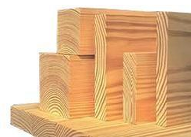
Madera de pino
Aspectos áspera, canteada, natural y los servicios de cepillada y tratamiento HT.
Medidas disponibles:
◉12” x 12” x 12”
◉1”x4”x10”
◉1 ½” x 8” x 8”
◉3.5” x 3.5” x 8”
◉4” x 4” x 10”
◉2” x 2” x 10”
2” x 8” x 10”
◉Medida personalizada de acuerdo a los requerimientos del cliente
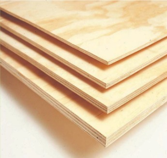
Triplay
De caobilla o pino.
Medidas disponibles:
◉4x8’ de 3mm (1/8) MDF
◉4x8’ de 6mm (1/4) MDF
◉4x8’ de 9mm (3/8)
◉4x8’ de 12mm (1/2)
◉4x8’ de 16mm (5/8)
◉4x8’ de 19mm (3/4)
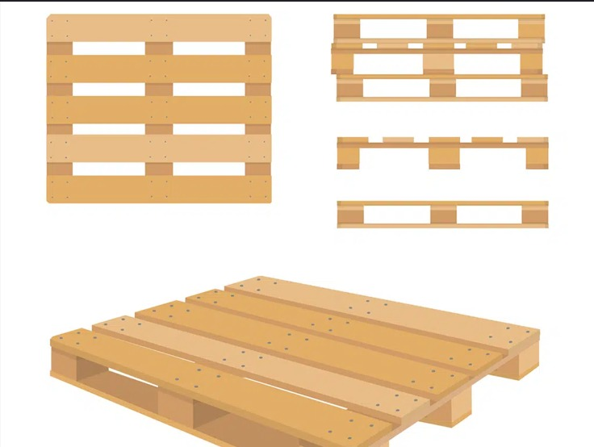
Tarimas
Elaboradas a base de madera de pino ásperas
Contamos con: Tratamiento térmico (HT-0000), Tarimas recicladas y nuevas, de color y blancas, con barrote y/o tacón
Medidas:
◉1.20 x 1 mts
◉Tarima de pino 40” x 40”
◉Tipo Chep 40” x 48”
◉1 x 1.20 mts
◉Medida personalizada de acuerdo a los requerimientos del cliente
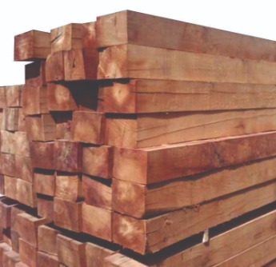
Vigas
Elaboradas a base de madera de pino ásperas.
Medidas:
◉12” x 12” x 8’
◉12” X 12” X 10’
◉12” X 12” X 16’
◉12” X 12” X 20’
◉6” x 6”x 8’ / 10’ / 16´
◉4” X 12” X 8’ Y 10’
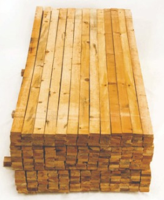
Polin
Elaboradas a base de madera de pino ásperas.
Medidas:
◉4” X 4” X 8’ Y 10’
◉3” X 3” X 8’ Y 10’
◉3 ½” X 3 ½” X 8’ Y 16’
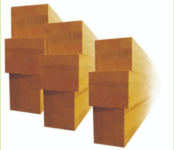
Durmiente
Elaboradas a base de madera de pino ásperas.
Medidas:
◉7” X 8” X 8’
◉8” X 8” X 8’ Y 10’
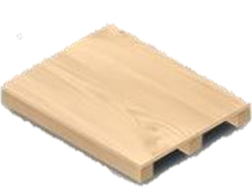
Cajas
Se elaboran de acuerdo a los requerimientos del cliente (personalizadas).
Skids
Se elaboran de acuerdo a los requerimientos del cliente (personalizadas).
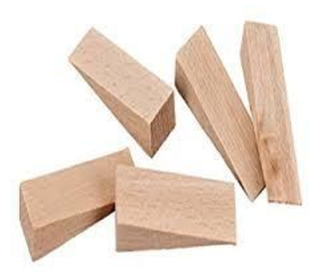
Cuñas
Medidas:
◉5 x 5 x 30 cm c/banquito de 2”
◉4x5x16 cm
◉Medida personalizada de acuerdo a los requerimientos del cliente
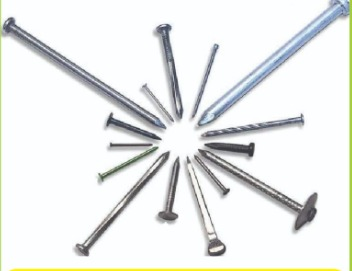
Clavos
◉Pijas
◉Clavo con cabeza liso de 2 ½”
◉Clavo con cabeza liso de 4”
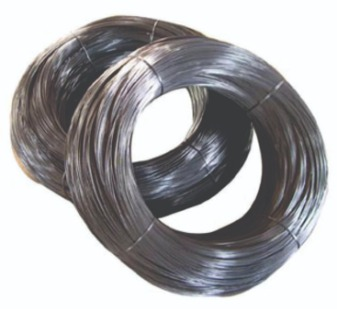
Alambre de amarre
Alambre de amarre reciclado de 16 MM
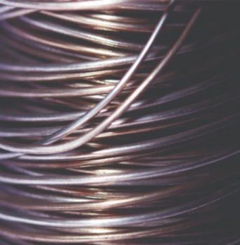
Alambrón
Alambrón de ¼”